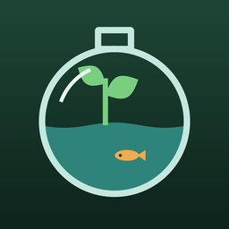

隱私權政策
微型生態師（MicroEcologist）· 生效日期：2026 年 10 月 28 日
本 App 不蒐集、不分享，也不出售任何個人資料。不需要帳號，不連上網路，沒有伺服器、廣告、分析或追蹤工具，也不會跨 App 或網站追蹤你。
儲存在你裝置上的資料
遊戲進度、收藏的作品、進行中的委託與排程、文字大小設定，只存放在你 iPhone 上的 App 資料夾裡，不會傳送到任何地方，開發者也取得不到。iOS 可能依你的設定把 App 資料納入 iCloud 或電腦備份；這由 Apple 依你的設定與 Apple 的隱私權政策處理，開發者無法取得。
權限
本 App 不使用相機、麥克風、位置、聯絡人或照片，也不請求這些權限。
第三方
本 App 不與任何第三方分享資料，也沒有嵌入會蒐集資料的第三方廣告或分析套件。
保存與刪除
資料只保存在你的裝置上，直到你刪除 App。刪除 App 會一併刪除它在該裝置上的所有資料，沒有其他地方需要申請刪除。
兒童隱私
本 App 不蒐集任何人的資料，包括兒童的資料。
政策變更
若日後的版本改變做法，會先更新本頁內容與生效日期，並在 App 內與 App Store 頁面說明。
聯絡方式
對本政策有任何疑問，請來信 ufoglove1@gmail.com。
Privacy Policy (English)
MicroEcologist (微型生態師) · Effective October 28, 2026
MicroEcologist does not collect, share or sell any personal data. The app has no accounts and makes no network connections; it has no servers, advertising, analytics or tracking, and does not track you across other apps or websites.
Data on your device. Game progress, saved works, the current commission and its schedule, and the text-size setting are stored only in the app’s folder on your iPhone. They are never sent anywhere and the developer cannot access them. iOS may include app data in your iCloud or computer backups according to your settings; Apple handles those under its own privacy policy.
Permissions. The app does not use the camera, microphone, location, contacts or photos, and requests none of these permissions.
Third parties. No data is shared with third parties, and the app contains no third-party advertising or analytics SDKs.
Retention and deletion. Data stays on your device until you delete the app, which removes all of it; there is nothing else to request.
Children. The app collects no data from anyone, including children.
Changes. Any change will be posted on this page with a new effective date, and announced in the app and on the App Store page.
Contact. ufoglove1@gmail.com